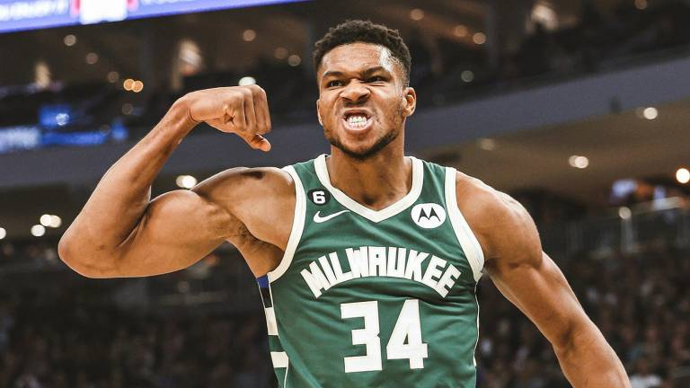

DESCRIPCION DE LOS JUGADORES:
Giannis Antetokounmpo es un baloncestista greco-nigeriano que pertenece a la plantilla de los Milwaukee Bucks de la NBA. Con 2,11 metros de altura, juega en la posición de ala-pívot, pero debido a su gran versatilidad es capaz de jugar tanto de alero como de pívot.